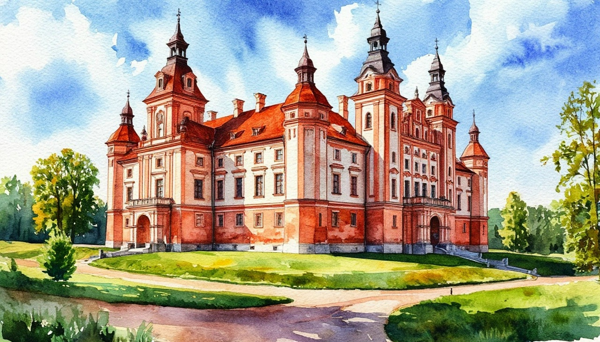

Средневековые замки Беларуси.

Даты тура: 11 - 15 июня | 16 - 20 июля | 30 июля - 3 августа | 6 - 10 августа
Стоимость тура:
- 36 500 р. - взрослый
- 36 300 р. - пенсионеры/студенты/школьники
- 43 000 р./чел - одноместное размещение
По программе:
- - Обзорная автобусно-пешеходная экскурсия по Минску
- - Посещение ТЦ «Столица»
- - Обзорная экскурсия по Бресту
- - Дегустация национального обеда + дегустация настоек (за доп. плату)
- - Обзорная экскурсия по г. Лида
- - Экскурсия в музей лидского Бровара (знакомство с историей пивоварения + обучение дегустации пива и местных напитков)
- - Экскурсия «Архитектурные памятники Мира и Несвижа»
- - Внешний осмотр Мирского Замка
Программа тура:
1 день:
- 13-00- выезд из Костромы от ТРЦ "РИО" (Ул. Магистральная, 20), правый угол от центрального входа
2 день:
- Прибытие в Минск. Встреча с гидом.
- Завтрак в кафе города.
- Обзорная экскурсия по Минску. Вы увидите Петро-Павловскую церковь начала ХVII в. и “Красный” костел начала ХХ в.; древнейшую улицу Немигу, что начиналась от Минского замка, и живописный Верхний город, с которым жизнь Минска была связана на протяжении пяти веков.
- На главной площади Свободы, Вы увидите ратушу, гостиный двор, торговые ряды, несколько монастырских комплексов (бернардинцев, базилиан, иезуитов), Кафедральные православный и католический соборы ХVII в.
- Мы сделаем остановку на знаменитой главной улице Минска, где полюбуемся памятником конструктивизма –оригинальной Национальной библиотекой и грандиозной Минск-ареной.
- История города, его великих людей чудесным образом оживут в рассказе экскурсовода на пешеходной прогулке по живописному Троицкому предместью, где кипела жизнь города позапрошлого века и куда сегодня влекут гостей музеи, сувенирные лавки, уютные кафе.
- Далее вы отправитесь в Торговый центр «Столица», который является воплощением идеи национального богатства и многообразия. Здесь представлены лучшие отечественные бренды".
- Свободное время на осмотр и покупку продукции. Обед программой тура не предусмотрен. В ТЦ "Столица" рекомендуем для обеда "Маэстро Бистро".
- Возможна организация дегустационного национального обеда в ресторане "Бульбашы" + дегустация настоек. Строго при бронировании тура!
- Меню:
- - картофельные драники с томлёной говяжьей грудинкой из Витебска и соусом из сметаны с грибами,
- - борщ с печёной свёклой, домашним салом собственного посола,
- - бородинский хлеб и сметана.
- Дегустационный сет из 5 настоек: поречка, крамбамбуля, хрен и мёд, пряная клюква, ванильная вишня.
- Стоимость: 4 500 р./чел - с дегустацией настоек, 3 500 р./чел - без дегустации настоек
- Размещение в гостинице.
- Свободное время.
3 день:
- Завтрак в отеле
- Выезд в Лиду. На протяжении веков город Лида принадлежал различным магнатам, и даже некоторое время был во владении… хана Золотой Орды Тохтомыша.
- Прибытие в Лиду.
- Знакомство с городом, обзорная экскурсия. Город основан в 1323 году великим князем Гедимином. С конца XIV и до начала XVI века Лида - великокняжеский город из первой пятерки городов Великого княжества Литовского. Здесь сохранился средневековый замок – замечательный памятник оборонительного зодчества XIV века.
- Экскурсия в Лидском замке.
- Лидский замок – древнейший на территории Беларуси, принадлежавший литовским великим князьям и польскому королю. В ходе экскурсии вы посетите замковый двор, башню и боевые галереи, услышите увлекательные истории этого древнего замка.
- Обед
- Экскурсия в музей лидского Бровара.
- В 2022 году на территории пивоваренного завода открылся музей пивоварения. Он разместился в историческом здании пивоварни, запущенной еще в 1876 году. Экспозиции музея предлагают большое число активностей и самых разных экспонатов, в том числе и интерактивных. Посетители познакомятся с историей пивной этикетки, бокала, увидят пивные бутылки завода Носеля Пупко конца XIX – начала XX века.
- На экскурсии вы узнаете историю пивоварения, а также научитесь правильно дегустировать местные сорта пива и напитков.
- Возвращение в Минск.
4 день:
- Завтрак в отеле. Освобождение номеров.
- Экскурсия «Архитектурные памятники Мира и Несвижа» в ходе которой Вы увидите самые ценные памятники Беларуси, внесенные ЮНЕСКО в Список всемирного культурного наследия.
- Несвиж - бывшая столица князей Радзивиллов. Входные билеты в замок. Осмотр Дворцово-паркового комплекса, в архитектуре которого переплетаются элементы ренессанса, барокко и классицизма.
- Прогулка по живописным Паркам, примыкающим к замку.
- Обед в кафе.
- Переезд в Мир.
- Внешний осмотр Мирского Замка, построенного в первой четверти XVI века, с мощными стенами, башнями и мощенным камнем внутренним двором поразит ваше воображение. По желанию, вы можете самостоятельно оплатить входные билеты в замок и прогуляться по старинным залам.
- Свободное время
- 17-00 (ориентировочно) выезд домой.
5 день:
Прибытие в Кострому в первой половине дня (ориентировочно)
В стоимость тура входит:
- - проживание в гостинице (в зависимости от дат тура)*
- * Гостиница "Арена"3* | Гостиница "Беларусь" | Гостиница "Турист" |
- - питание: 3 завтрака + 2 обеда
- - услуги гида-экскурсовода
- - экскурсионная программа
- - автобусное обслуживание по программе тура
- Для бронирования необходимы данные паспорта РФ и свидетельства о рождении, если с вами путешествуют дети
- Предоплата – 50% от стоимости тура. Остаток за 30 дней до даты выезда.
- Любой тур можно оформить не выходя из дома. Подробнее: Тут
Стоимость тура не зафиксированы и могут быть изменены в большую или меньшую сторону в зависимости от уровня спроса в любой момент.
Время начала экскурсий и их порядок указано ориентировочно.
Фирма-исполнитель оставляет за собой право замены экскурсий без уменьшения общего объема экскурсионной программы.
По вопросам бронирования обращайтесь: